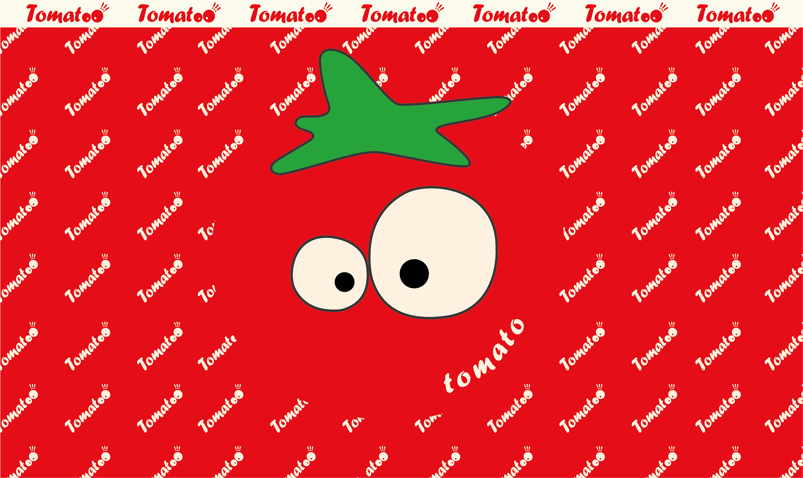

项目概述
tomatoo是一款主打轻松、便捷、充满乐趣的番茄酱品牌，通过富有设计感和情绪张力的产品形象，刷新人们对传统番茄酱的认知。
设计内容
品牌视觉形象设计、产品包装视觉、品牌主视觉海报设计。

以趣味赋产品，以设计塑品牌
融轻松便捷之态，立鲜活年轻之象
融轻松便捷之态，立鲜活年轻之象

tomatoo是一款主打轻松、便捷、充满乐趣的番茄酱品牌，通过富有设计感和情绪张力的产品形象，刷新人们对传统番茄酱的认知。
品牌视觉形象设计、产品包装视觉、品牌主视觉海报设计。